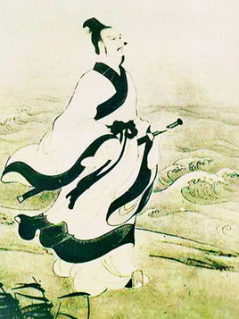

屈原（约公元前340或339年～公元前278年），战国时期楚国诗人、政治家，出生地楚国丹阳，湖北省宜昌市，芈姓，屈氏，名平，字原；又自云名正则，字灵均，战国时。楚武王熊通之子屈瑕的后代。少年时受过良好的教育，博闻强志，志向远大。是中国历史上第一位伟大的爱国诗人，中国浪漫主义文学的奠基人，“楚辞”的创立者和代表作者，开辟了“香草美人”的传统，被誉为“中华诗祖”、“辞赋之祖”。早年受楚怀王信任，任左徒、三闾大夫，兼管内政外交大事。 他提倡“美政”，主张对内举贤任能，修明法度，对外力主联齐抗秦。因遭贵族排挤毁谤，被先后流放至汉北和沅湘流域。秦将白起攻破楚都郢（今湖北江陵）后，屈原自沉于汨罗江，以身殉国。1953年，屈原逝世2230周年之际，世界和平理事会通过决议，确定屈原为当年纪念的世界四大文化名人之一。
粽籺是籺的一种，俗称“粽子”，又称“角黍”、“筒粽”，由粽叶包裹糯米白糖腌桂花酱蒸制而成，是中华民族传统节庆食物之一。历史上关于粽子的记载，最早见于汉代许慎的《说文解字》。“粽”字本作“糉”，芦叶裹米也。从米，葼声。粽早在春秋时期就已出现，最初是用来祭祀祖先和神灵。到了晋代，粽子成为端午节庆食物。粽作为中国历史文化积淀最深厚的传统食品之一，亦传播甚远。日本、越南以及华人聚居的新加坡、马来西亚、缅甸等地也有吃粽子的习俗。其是一种粽叶包裹糯米蒸煮食品，起自南方古百越俚人时代，至今已经有两千多年历史。[1] 自古至今，每年农历五月初，中国百姓家家都要浸糯米、洗粽叶、包粽子。粽的种类繁多，从馅料看，北方有包小枣的北京枣粽；南方则有豆沙、鲜肉、八宝、火腿、蛋黄等多种馅料。